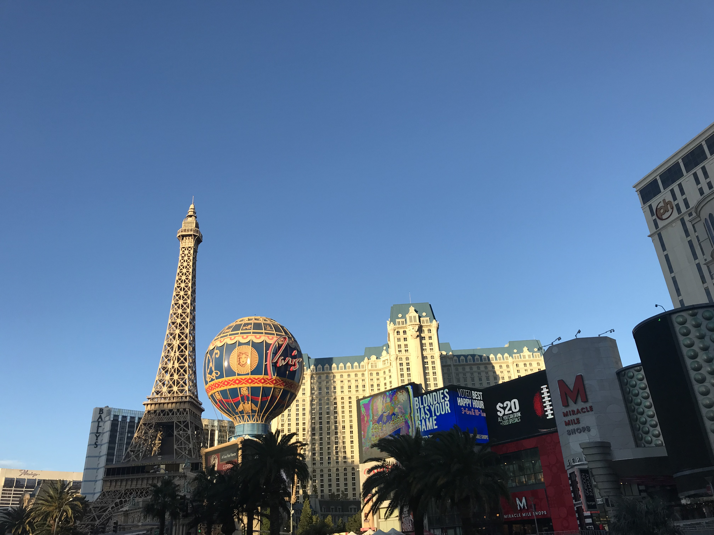

💻 I'm a Global BBA student at ESSEC Business School. ✈️ I love travelling aroung the world, discovering other cultures and meeting new people 🗺. I also like to visit art galleries or museums 🧑🎨. But most importantly, I like to take pictures during these activities 📸
View My ResumeI'm curious by nature. I enjoy discovering new places, meeting new people. I travel to experience something unfamiliar and leave with new skills or knowledge. I think that every destination has something unique to teach. Exploring an unknown place constantly challenges you, not only to adapt to and explore new surroundings, but also to engage with different people, to embrace adventures as they come and to share new and meaningful experiences with friends and loved ones.

As I said earlier, I'm curious. So when I am abroad, I like to learn about the country I am visiting and it's one of the best ways to do it. It's also a great way to meet new people and make new friends. But I also like to visit art galleries or museums just to enjoy art and culture, expand my mind, dream and escape reality for a moment. I try to imagine what it represents and why did the artist do it. Finally, there are various types of museums. But I think that among the historical ones or the religious ones, my favorites are the art museums.